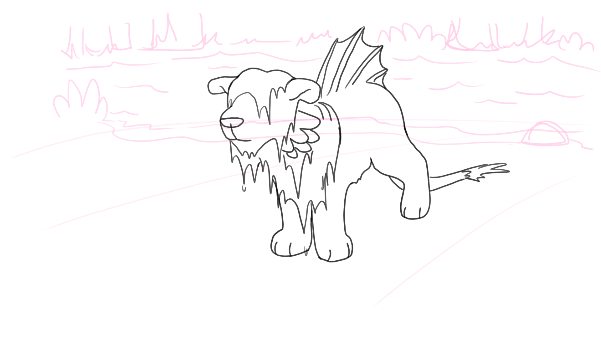
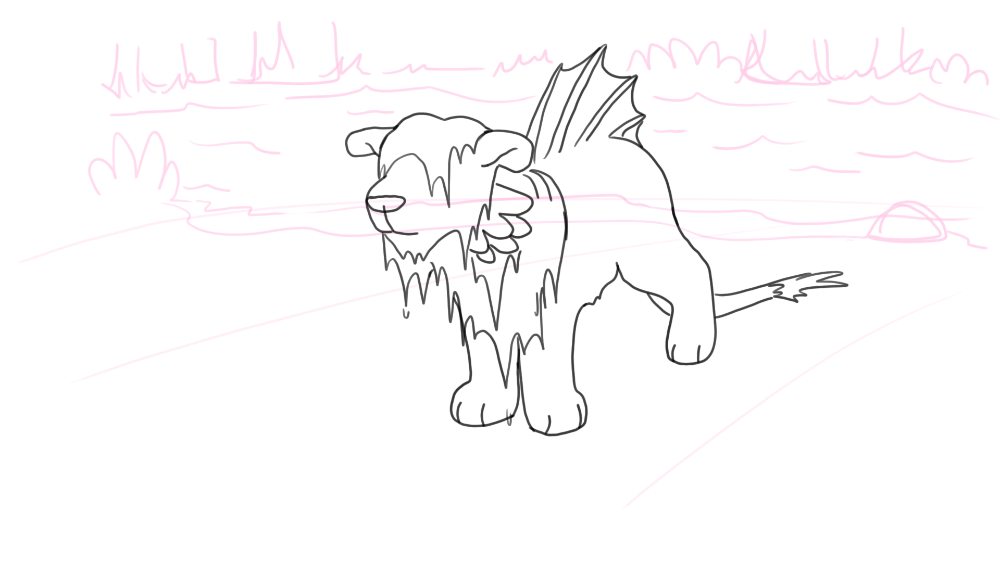

Witness


 

As encounters became unavoidable, and interest grew in these unoique creatures, people saw studied their behavour more and it was learned that the Lionfish was docile to humans, as it didn't recognize them as prey and had no interest in harming them. This footage was taken of a lionfish freshly surfaced from a local Seavanna stream and has inspired many to preserve the ecosystms of these creatures so that we may appreciate their cuteness for generations to come.